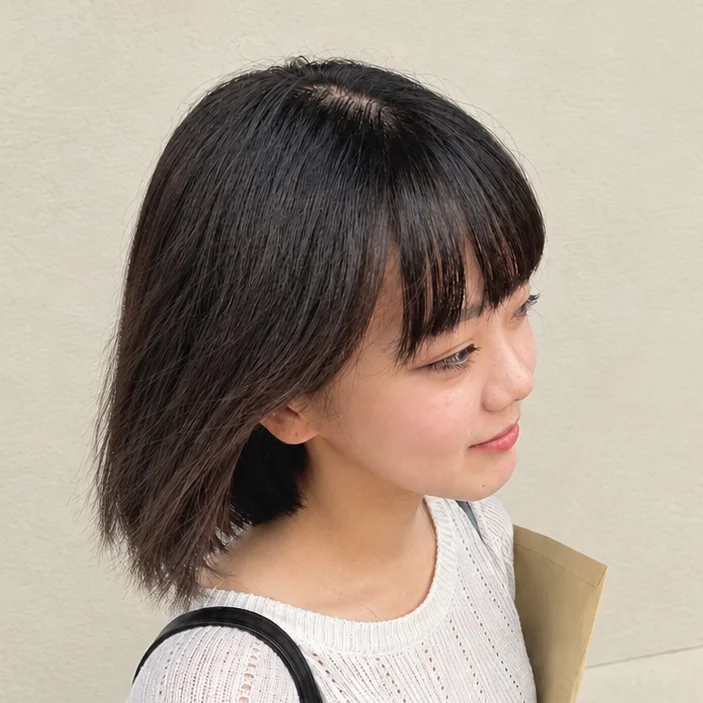
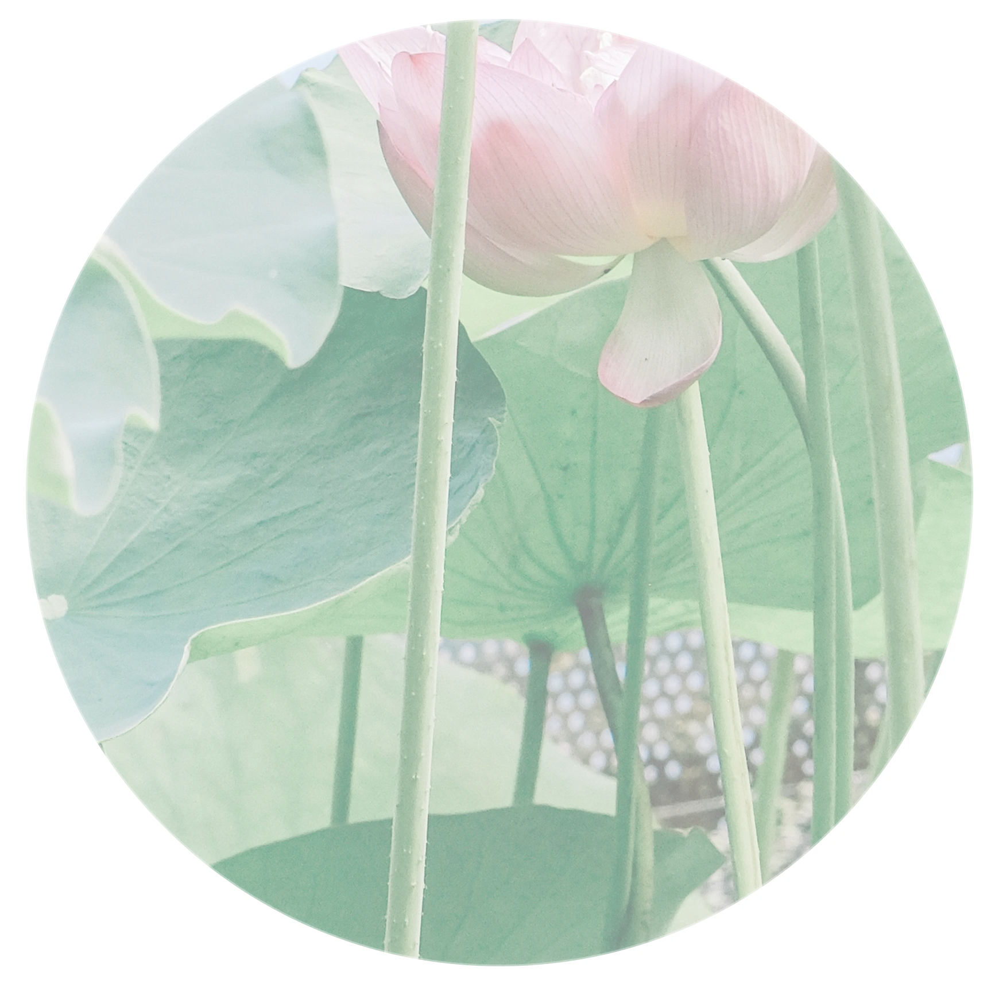
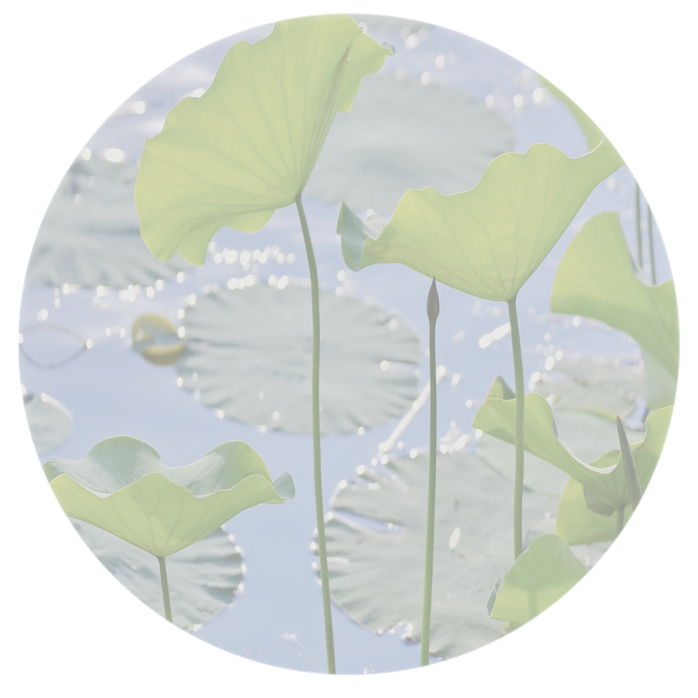

About

白濱 蓮
Ren Shirahama
2002年3月生まれ／長崎県出身
前職では一般事務として働く中で、PCを使って業務を効率化
する方法を調べたり工夫したりすることに楽しさを感じ、
Web制作に興味を持つようになりました。
現在は職業訓練でWebデザインやコーディングを学び、
Webデザイナーを目指しています。
好きなこと：ダンス | NARUTO | 猫 | お笑い | 読書
蓮 Core
私を形づくる、３つのスタンス
01泥に根を張る
－粘り強く、学び続ける力－
「昨日の自分より強く」をモットーに、前職の一般事務でも未経験の業務やPCツールを自主的に学び、効率化に繋げてきました。Webデザインへの挑戦においても、難しいコードやデザインの壁に直面しても決して諦めず、一つひとつ課題を解決して3つのWebサイト制作まで形にしました。実務に入ってからも、新しい技術やトレンドを粘り強く学び続ける姿勢を大切にします。

02自ら伸びる茎
－自分で考え、工夫する力－
わからないことがあっても、まずは公式ドキュメントや参考事例を自分で調べ、解決する方法を工夫します。新しいことにも「まずはやってみよう」と挑戦し、試行錯誤しながらより良い方法を模索します。また、自分だけで抱え込んで判断が遅れることのないよう、必要な時は適切なタイミングで周囲に相談・共有し、より良い成果を出せるよう行動します。

03水に揺れる葉
－柔軟に対応する力－
前職の事務職で培った「相手の立場や状況を先回りして考える視点」を大切に、その人に合わせた柔軟な対応を心がけています。周囲と積極的にコミュニケーションをとり、クライアントやチームメンバーの意図や想いを深く汲み取りながらも、自分の意見や提案を持ち、協力して仕事を進めることを大切にしています。
自分らしい花を咲かせる
現場での学びと経験を日々積み重ねながら、自分らしい強みを育て、
それぞれの持つ魅力や想いをデザインでまっすぐ伝えられるWebデザイナーへ。